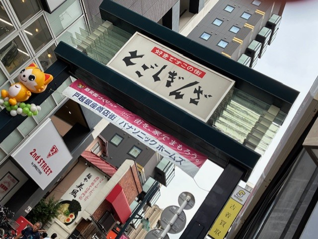

【路上観察のまとめ】
路上観察のまとめ
導入
今回は観察の課題として面白い看板を３枚ほどアップして説明するということで私は戸越銀座に行きました。
そこで見つけた面白い看板を紹介します。
紹介する前に
看板を紹介する前に戸越銀座の看板も面白いデザインになっていたので紹介します。
写真はすべて10月12日の晴れているときに私が撮ったものです。

この看板は戸越銀座商店街そのものの看板です。戸越銀座商店街は、東急池上線の「戸越銀座駅」に」接する、全長約1.3kmにわたる関東有数の長さを誇る
商店街で商店街沿いには約400件の店舗が軒を連ね、生鮮三品を扱うお店も多く残っている最寄品を中心とした近隣型の商店街です。
歴史としては大正12年の関東大震災で壊滅的な被害を受けた東京の下町や横浜方面の商業者たちが、
当時発展の著しかった大崎周辺の工場地帯であるこの地に活路を見出して集まってきたことと、
昭和2年に東急池上線「戸越銀座駅」が開業し、それまで散在していた周辺の商店が駅を中心に集まってきたことで、現在の戸越銀座商店街の元になる商業集積ができたといわれています。
前置きが長くなりましたが、これから看板を紹介していきます。
①カプセル楽局
まず最初に見つけた面白い看板はカプセル楽局の看板です。この看板を初めて見たとき私は、カプセルだしただの薬局かと思っていました。
ですがよく見てみると・・・カプセル楽局だったのです！さらに店内を見てみると・・・
この通り、すべてカプセルつまりガチャガチャの店舗だったのです！調べてみるとお店のキャッチコピーに
新しいガチャ専門店、その名も「カプセル楽局」。薬局ではありません、「らっきょく」です。とあるように、お店側も
薬局との違いに焦点を当てていて見事に引っかかって面白かったです。
②うなぎいも.STORE In Hamamatsu

次に見つけた面白い看板はうなぎいもの看板です。この写真を付き添いで来ていた母が「うなぎいぬ」のパクリじゃんと言っていました。
私は何のことかわからなかったので調べてみると「天才バカボン」に出てくるキャラクターで確かに似てなくもないと思いました。
しかし、お店のキャッチコピーを見てみると浜名湖のうなぎと遠州浜のさつまいもがコラボして生まれた新しい浜松限定ブランド「うなぎいも」
だったので実際は何も関係ないことがわかり、ちょっとがっかりでした。
③食パンまるや

最後に見つけた面白い看板は食パンまるやです。この看板は見ただけで面白さが伝わると思います。看板を斬新に食パンの柄にしているだけでなく、
左手には食パン屋なのに冷凍カツサンドの自販機。調べてみると「まるや」は元々とんかつ屋で、お店のPRにも
とんかつ屋がこだわって焼いた食パン。かつサンド用に焼いた食パンです♪とあり、納得しました。
参考文献
戸越銀座について
うなぎいもとは？
食パンまるやの食べログ